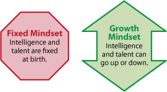

Personal growth is an integral part of DBC. This includes being cognizant of one's own learning style. For example, the Gregorn Thinking Style proposes two considerations for how the mind works: perceptual quality and ordering ability. The first type of perceptual quality is concrete, which is an affinity for the senses and more tangible aspects. The other type is abstract, relying more on the intuition and imagination. The types of ordering ability are sequential and random. Sequential prefers a linear, step-by-step approach whereas random may proceed in separate clusters without particular order. I consider myself a sequential abstract thinker. Consequently, I take analytical, logical approaches to problems. I tend to not benefit from strategies like pseudocode.
Another model of thinking styles is the Growth or Fixed Mindset.
The fixed mindset is based on the belief that intelligence is a static, inherent quality. Because they don't believe they can grow intelligence, they tend to avoid challenges, feel jealous of more successful people, and disregard potentially helpful criticism. In contrast, the growth mindset believes intelligence is a trainable quality. These people embrace and confront challenges, learn from their failures, and draw inspiration from successful people. The growth mindset is what we strive for at DBC! In fact, giving and rating feedback is a program requirement. It's an important growth tool. Even the faculty take feedback and use it to evolve the program.